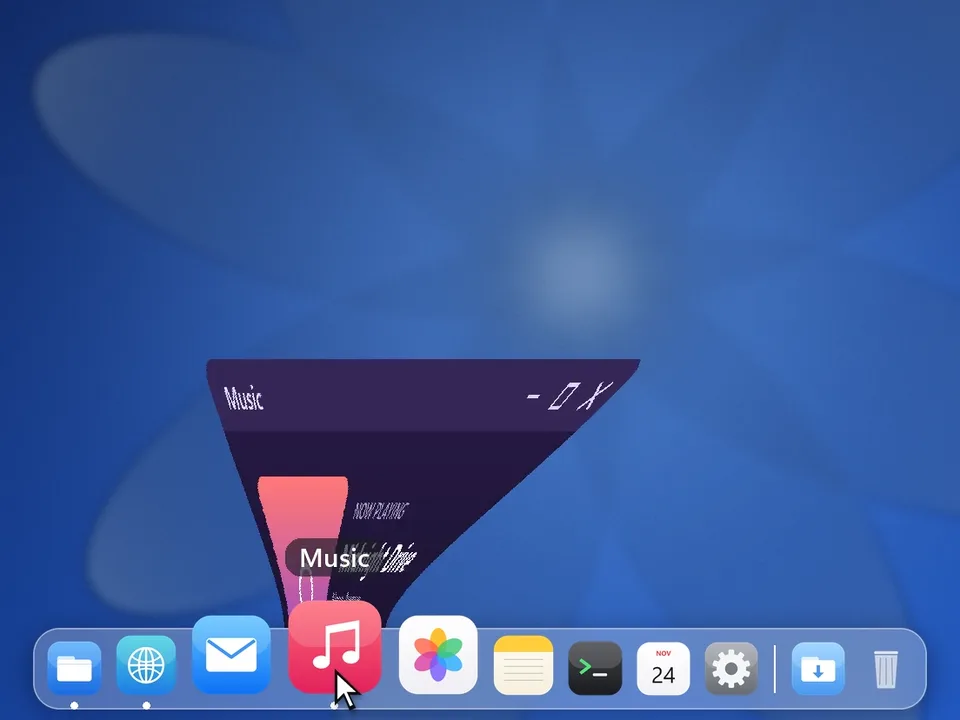
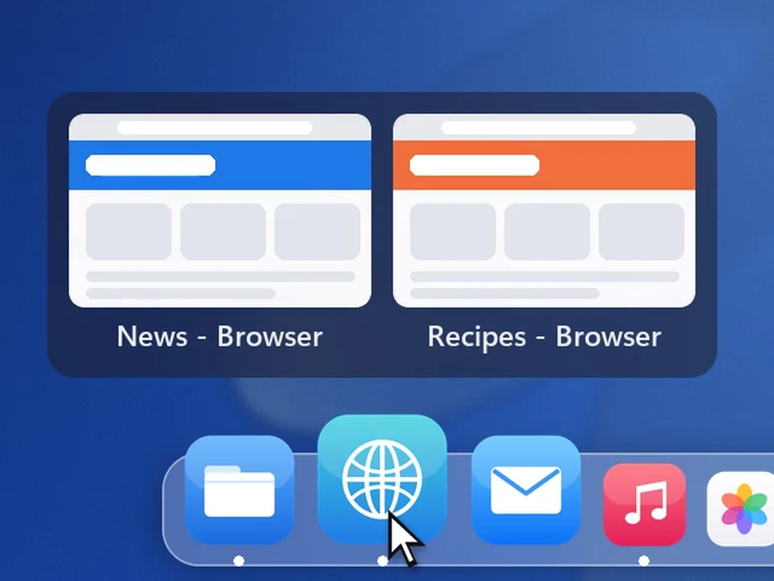
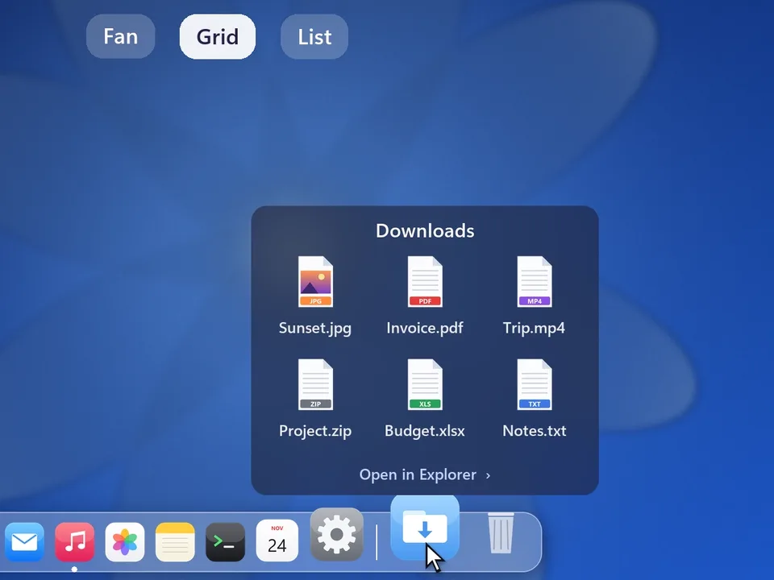
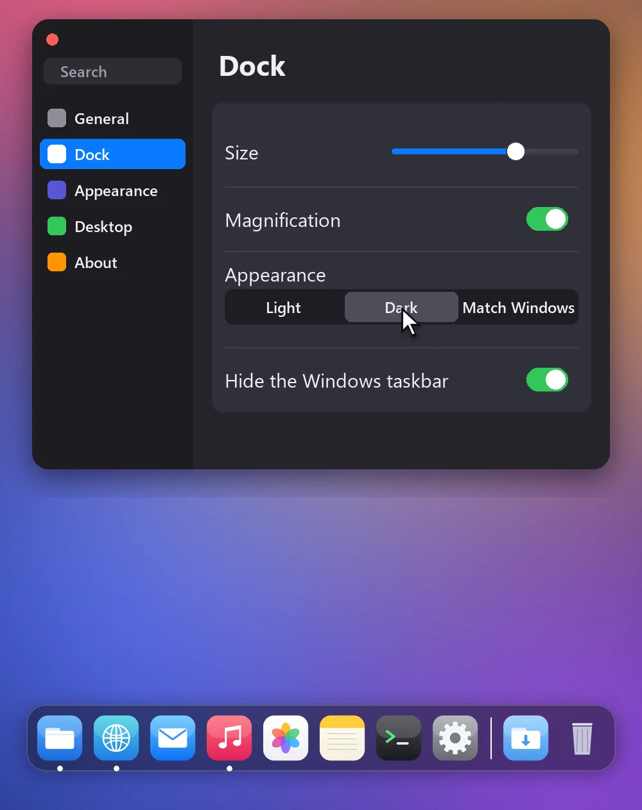

Minimise with a genie
Click a running app and its window flows down into its icon. Click again and it comes back the same way.

WinDock replaces the taskbar with a dock that magnifies as you move, bounces when an app opens and slides away when you don't need it. Quit it, and your taskbar is back exactly as it was.
Version 0.1.0 for Windows 11. Free, 250 KB, no admin rights.
Portable zip and checksums
Move your pointer along the dock. Click an icon.Tap an icon to open it.
Magnification, the genie, window previews, folder stacks, removing an icon, auto-hide and Settings. Turn the sound on for the soundtrack.
An illustration drawn from code, not a screen recording.
Click a running app and its window flows down into its icon. Click again and it comes back the same way.

Rest on a running app for half a second to see live previews of its windows, then click the one you want.

Pin a folder and open it as a fan, a grid or a list. Each file opens with one click, and the whole folder is one more click away in File Explorer.

Drag the size slider and the dock grows while you drag. Switch to dark and the dock follows. Settings are also a plain text file you can edit by hand.

Windows protected your PC, choose More info, then Run anyway. WinDock isn't code-signed yet, so SmartScreen doesn't recognise it.
To remove it, open Settings › Apps › Installed apps and uninstall WinDock. Your taskbar comes back.
If Smart App Control is on, Windows blocks every unsigned app, including WinDock. Check under Windows Security › App & browser control.
WinDock has no telemetry and no account. It only goes online to fetch a website's icon when you pin that website. It runs for your Windows account alone and changes nothing outside it.
It's free and open source under the MIT licence. Read the code, report a bug or suggest an idea on GitHub.